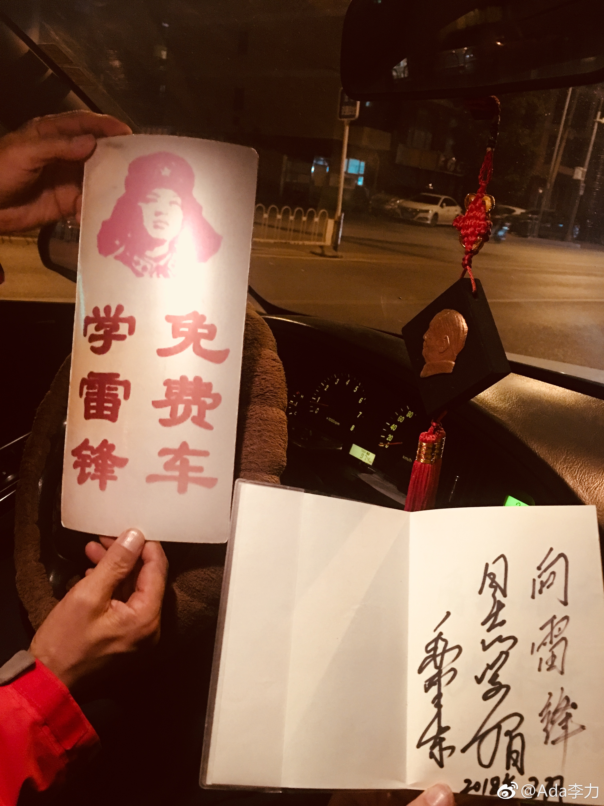

周五下班走路回家，轿车靠近我慢下来时，我的警惕心先起来了，拉活的？问路的？还是不怀好意的？结果是问我要不要做免费车，犹豫中，师傅举出个“学雷锋免费车”的牌子，我就坐上去了。上车后师傅递给我个小本本，写留言。翻了下前面的留言，都是称赞师傅大好人的。算是奇遇了，所以直到睡前都很开心。
今天要爬山，集合处有个冰川馆，我想进去看看，#姣姣#拉住我不让进，说：我最讨厌看博物馆了。我说：姣姣，你怎么跟老人似的，对没见识过的东西还没妈妈有兴趣。姣姣：我早熟，测成熟度的时候，测我是三十多岁我乐：姣姣，你知道吗？妈妈之前测成熟度，是十九岁。姣姣：所以，你以后得听我的。